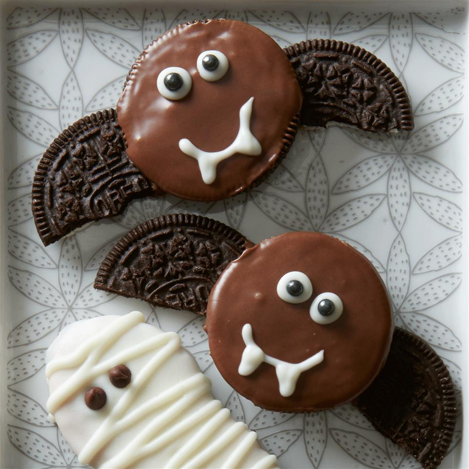
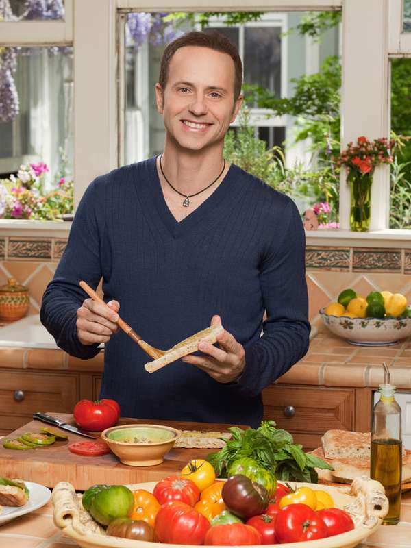

Overview
Purpose
The main objective of Ku-Kin is to be the main resource center for all those who love cooking worldwide. Our projection is to accompany you throughout the training process so that you have the necessary guidance so that your appointments are fulfilled in the short, medium, and long term. Let's work hand in hand to offer a better service to our guests.
Audience
Our main audience is all those lovers of the kitchen of any level, amateurs, basic, experts and professionals. We have the best professionals with more than 10 years of experience who will help you with the teaching of cooking maneuvers, techniques, and recipes from any country in the world.
Branding
Website Logo
Style Guide
Color Palette
Palette URL: https://coolors.co/f2f2ea-fed5cf-f0979b-d14754-b8a3b4-ded4d3| Primary | Secondary | Accent 1 | Accent 2 | Accent 3 |
|---|---|---|---|---|
| [#F2F2EA] | [#F0979B] | [#D14754] | [#B8A3B4] | [#DeD4D3] |
Typography
Heading Font: Fjalla One
This font style is ideal for headline text that need an emphasis on the site, so it will be used to enhance its importance.
Paragraph Font: Rambla
This font style has been selected for the paragraphs in order to allow an excellent reading and control large blocks of information.
Normal paragraph example
The best Whitewater Rafting in Colorado, White Water Rafting Company offers rafting on the Colorado and Roaring Fork Rivers in Glenwood Springs. Since 1974, we have been family owned and operated, rafting the Shoshone section of Glenwood Canyon and beyond.
Colored paragraph example
Trips vary from mild and great for families, to trips exclusively for physically fit and experienced rafters. No matter what type of river adventures you are seeking, White Water Rafting Company can make it happen for you.
Navigation
Site Map
Content
Home page
Welcome to Ku-kin here you can find the recipes for this season, let's celebrate Halloween together learning how to prepare the most delicious desserts, from cookies, sweets, etc. Check the following sites to find recipes that will help you take control of your health, organize and plan to achieve a balance between calories and carbohydrates. Check out the latest webinar session for daily drinks that will fill you with energy, ideal for the little ones in the house.
Images for the Home page
- 


About Us
We are Ku-kin, we take care of guiding cooking lovers in their specialization and instructing them to achieve their greatest goals, you can participate together with those who have already completed the course and hear about their experiences, recommendations, and warnings. If you complete the specialization course you will have the opportunity to participate in a scholarship to learn from the best in this science.
Images for the Page 2


Contact Us
Ku-kin is an online cooking learning site that covers every type of recipe imaginable. Learn how to make desserts, kids' snacks, dinner recipes, lunch ideas, breakfast recipes, quick and easy meals, slow cooker recipes, holiday meal ideas, and more. Anyone who likes to cook and find new recipe ideas would enjoy a subscription to Ku-kin. Complete the form, or call us at (0800) 512-9650-0 and make an appointment with our sales consultants for more information about our plans.
Images for the Page 3
- 
Wireframes
Create three wireframes for your site. One for each page and list them here
Home
The home page will have a catalog layout to contain multiple recipe spaces.
About Us
The About Us page will have a banner and content slots to list specific information of the business.

Contact Us
The Contact Us page will have a banner and content slots with a form that help to the customers to complete information to apply for a subscription.